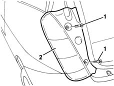
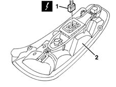

5540A44 l/h or r/h tail light (one) - r+r
- Path
- Procedures > 55 ELECTRICAL EQUIPMENT > 5540 EXTERIOR LIGHTING > 5540A lighting > 5540A44 l/h or r/h tail light (one) - r+r
- Kind
- repair procedure (removal / refitting; the operation number is the code)
- Applies to
- all engines; all production periods
- Interactive page
- https://sloeber94.github.io/elrnDB-lYpsln/en/#/2429404
Applies to: all engines; all production periods
 Removing
Removing
 Refitting
RefittingOpen the tailgate.
1. Undo the bolts.
2. Move the tail-light slightly

Applies to: all engines; all production periods
1. Disconnect the electrical connection.
 | Name | Connector |
|---|---|---|
1 | Rear left light cluster |
| Name | Connector |
|---|---|---|
1 | Rear right light cluster |
2. Recover the light cluster.

Applies to: all engines; all production periods
Refitting
RemovingCheck that the light cluster is not damaged.
Connect the electrical connection, position the light and secure with bolts.
Check the operation of the rear light cluster lights.